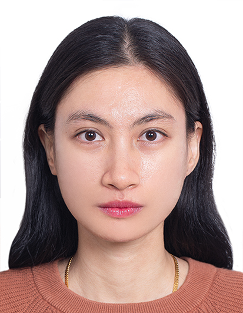

AI Engineer | Applied AI Research | LLMs & Reasoning
I am a Master’s graduate in Artificial Intelligence from the Gwangju Institute of Science and Technology (GIST), where I conducted research within the Data Science Lab. My expertise centers on Generative AI, Prompt Engineering, and building complex deep learning systems.
My work focuses on multiple domains including Hybrid AI for visual reasoning, exploring neural and deep learning approaches to improve AI interpretability, logic execution, and cognitive benchmarks.
Logic-Driven AI Systems: I believe the key to robust visual and mathematical reasoning is pairing the fluid intuition of deep neural models with the structured, verifiable guarantees of program synthesis.
Optimization Scaling: Fine-tuning models shouldn't mean wasting compute. I focus on highly targeted, compute-efficient routines (QLoRA, SFT) designed to scale efficiently on limited hardware constraints.
Gwangju Institute of Science and Technology (GIST) | South Korea
3F Resources Sdn. Bhd. | Kuala Lumpur, Malaysia
Rifhan Teknologi Sdn. Bhd. | Kuala Lumpur, Malaysia
Universiti Teknologi MARA (UiTM)
Awarded for achieving top-tier academic excellence during Bachelor's degree studies.
UiTM | Intelligent Systems Engineering
Earned placement on Dean's List awards every semester throughout entire university track.
List of my core academic publications & Developed Projects and Systems.
Developed an end-to-end LLM-based program generation pipeline focused on LLM interpretability and logic correction systems. Orchestrated systematic prompt validation frameworks and fine-tuned open-source language models using QLoRA, LoRA, and SFT routines.
Marha Midhatiey Rusli, Donghyeon Shin, Sejin Kim, Sundong Kim (Logical and Symbolic Reasoning in Language Models @ AAAI 2026)
Input Grid (Problem)
Current Workspace State
Developed an end-to-end voice profile extraction engine matching user vocal signatures onto precise singer target acoustic profiles. Configured high-performance real-time data streaming pipelines using Kafka event brokers.
A real-time vision processing utility analyzing live camera video streams to predict driver microsleep tendencies based on multi-frame facial landmark features.
M.M. Rusli, K.A. Ahmad, A.A. Ahmadrofi, P. Jayadi, M.M. Din (Journal of Advanced Research in Applied Mechanics)
Conducted semantic web scraping across digital channels to extract, classify, and track key public evaluation trends related to Malaysia Airlines flight services.